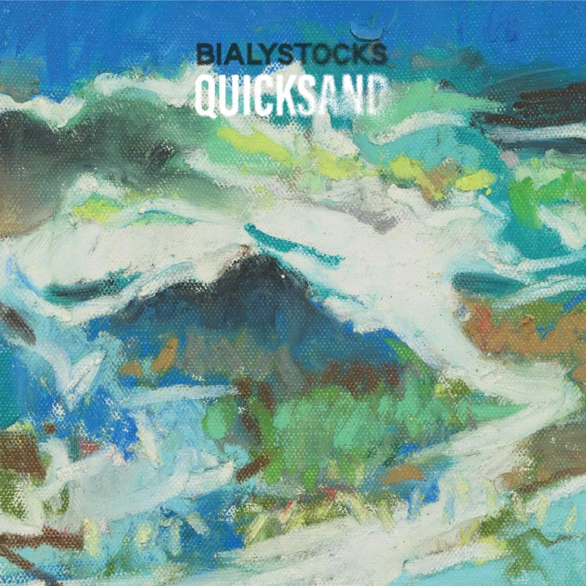
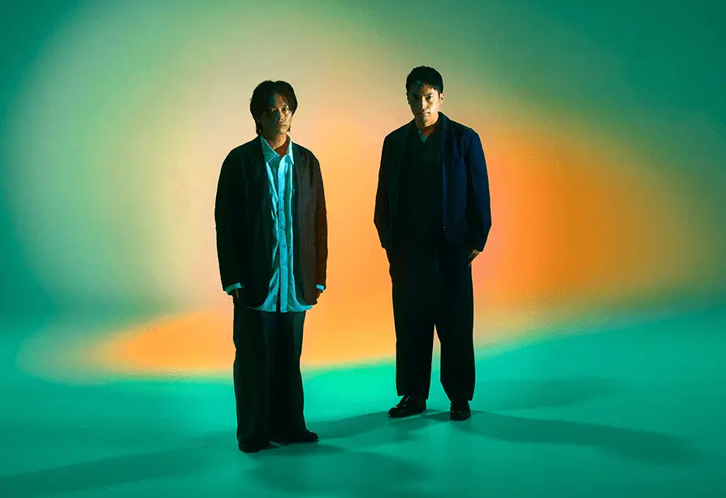

Album#36
Quicksand
{kind=link}

专辑信息
- 专辑名称： Quicksand
- 歌手： Bialystocks
- 年份： 2022-11-30
- 风格： 摇滚、日语流行
- 时长： 约 38 分钟

最近在看一部动画 違国日記，是一部治愈系的动画，主角「朝」父母因意外去世，她的阿姨「槙生」将她领回家，成为「朝」的监护人。动画讲述了「朝」的彷徨，以及两个人的生活，和相互之间的成长。
「朝」很喜欢唱歌，她有一个喜欢的乐队，在第五集快结束的时候，乐队在电视上演出，「朝」说这个乐队的贝斯演奏很棒，我也很喜欢贝斯的声音，但动画里只放了一个小片段，我就用网易云的听歌识曲识别了一下，发现是 Bialystocks 的 Upon You ，点开这首歌的专辑，发现我很早以前就听过里面的 差し色 ，还挺巧的，于是我就将专辑找来听了听，很喜欢，也喜欢这个乐队。 (違国日記的片尾曲也是 Bialystocks 唱的，歌名是 言伝 。)
{kind=link}

Bialystocks 是一支日本的摇滚乐队，成员是甫木元 空，负责主唱、吉他、短号、作词及作曲；和菊池 剛，负责钢琴、合成器、吉他、贝斯、颤音琴、编程、人声、作词、作曲及编曲。
2019年，为了在主唱甫木元空执导、青山真治监制的电影 《春猫》 中进行现场配乐演出，该乐队正式成立。他们的音乐因甫木元空那充满灵魂且令人舒适的歌声、基于民谣的放松旋律，以及菊池刚基于爵士乐的自由作曲与乐器组合所展现出的包容性与独创性而备受赞赏。
乐队名字 Bialystocks 据说是源于菊池非常喜欢、甚至自称「看过无数遍以至于记住了所有台词」的电影 《制作人》 中主人公的名字「Bialystocks」。
Quicksand 这张专辑我觉得编曲挺丰富的，我也很喜欢甫木元空的声音，他的声音听起来比较柔和，不是那种清晰的嗓音，而像是带着一些噪点，模糊的感觉。两个人的和声也好听，有时觉得像 The Beatles 的和声。
专辑封面是油画风格，整体是偏绿色、青色、蓝色，似乎描绘了天空、山、河、树丛，远看又像是一片有许多起伏的沙漠。
有的歌我还贴了对应的 MV 或者 Live 视频链接，也推荐一看，都是很不错的版本。
TRACKLIST
朝靄 (Asamoya)
歌词
[Verse 1]
あの日から跳ねた光景 はるか遠い呼び声
あの目から消えた光景 はるか遠い黄昏
あの手から溶けた光景 はるか遠く募るの届く
言葉から跳ねた後悔 それは遠い呼び声
子供から消えた後悔 それは遠い黄昏
梢から溶けた後悔 それは遠く募るの残る
[Chorus]
浮かんだ言葉で 沈んだ瞳で
足りない日々を埋める
また浮かんでく手のひら ただ沈んでく想いが
まだそばにいてくれる
溢れ出した後悔は水面になって
ただそんな事ばかりで
[Verse 2]
この日から跳ねた風景 はるか遠い歌声
この目から消えた風景 はるか遠い黄昏
この手から溶けた風景 はるか遠く募るの響く
[Chorus]
ただ沈んでく言葉で また浮かんでく瞳で
足りない日々をためる
ただ沈んでく手のひら また浮かんでく想いは
ただそばにいてくれる
溢れ出した後悔は水面になって
またそんな事ばかりで ただそんな事ばかりで
またそんな事ばかりで ただそんな事ばかり
歌词大意
#+begin_verse
从那一天起跃动的光景 远方的召唤声
从那双眼中消失的光景 遥远的黄昏
从那双手里消融的光景 在遥不可及的远方愈发强烈
言语间溢出的后悔 那是遥远的呼唤声
孩提时消失的后悔 那是遥远的黄昏
树梢上融化的后悔 在遥远的远方愈发强烈而残留
用浮现的话语 以及沉郁的目光
填补残缺的每一天
再次摊开的手心 只是沉寂的思绪
依然陪伴在身边
满溢而出的后悔化作水面
只是这般 尽是这般
从这日跃出的风景 遥远的歌声
从这双眼隐没的风景 遥远的黄昏
从这双手消融的风景 在遥远的远方愈发强烈地回响
只是以沉落的话语 以再次浮现的眼眸
积攒残缺的每一天
只是逐渐垂下的手心 而再次浮现的思绪
只是伴我身旁
满溢而出的后悔化作水面
又是这般 尽是这般
又是这般 尽是这般
又是这般 尽是这般
歌名是 朝靄 ，就是太阳升起前出现的雾气吧，以前在海边城市生活过，海边起雾的时候，能见度很低，可能只有三四米的能见度，像是电影 《迷雾》 一样。
这首歌里，主唱的声音也是模糊的，给人一种飘渺的，遥远的感觉，越到后面越是遥远。钢琴旋律也还蛮好听的，有一种「水」的质感。整体和歌词内容挺贴合的。
灯台 (Todai)
歌词
[Verse 1]
灯り光りゆらり届くどこから
何度も 何度も
募る 残る 踊る 孤独 ここから
何度も 何度も
[Chorus]
旅立つ人は波の様に
闇夜に今日も出会って触って
[Verse 2]
過ぎる過ぎる滑る荒む どこから
最後の最後に
黒く白く歩く拾うここから
ただ迷子のお客さん
[Verse 3]
去りゆく定め見つめるたび
無いのが元々
時の波止場に漂ういつまでも伸びる記憶の影を
何度も最後のつもり
[Chorus]
旅立つ人は風の様に
子守唄の様な様な
[Post-Chorus]
様な, 様な
様な, 様な
様な, 様な
様な, 様な
[Bridge]
あちらはどうやらいいとこ
帰ってくる者いないもの
こちらはどうやらいいとこ
出会って別れて何度も
いつでも絶えずに光は
無数の螺旋から
[Chorus]
旅立つ人が眠る様に
星はただ巡って回って
旅立つ夜にさようならを
言えたならばいいないいな
旅立つ事に誰も彼も意味などない
この世に偶然は無い当ての無い
会うべき人に出会える様に
朝日は今あなたを待って
歌词大意
[Verse 1]
灯光摇曳着从何处传来
一次又一次
滋生、停留、起舞的孤独，从这里
一次又一次
[Chorus]
启程之人如同海浪
今夜在暗夜里也相逢相触
[Verse 2]
掠过、掠过、滑落、荒败，从哪里来
在最后的最后
黑与白间，走着、拾起，从这里
不过是个迷路的访客
[Verse 3]
每次凝视那注定要远去的命运
原本就一无所有
在时间的码头上漂着，不断伸展的记忆之影
一次次当作最后一次
[Chorus]
p启程的人们宛如清风
如同摇篮曲一般 那般模样
[Post-Chorus]
似的, 似的
似的, 似的
似的, 似的
似的, 似的
[Bridge]
在那边 似乎是个好去处呢
毕竟未曾见谁归来过
在这一边 似乎也是个好地方
无数次上演着相遇与别离
那永不熄灭的光芒
源自那无尽的螺旋
[Chorus]
让启程之人仿佛入睡
群星只是巡游旋转
若在那启程之夜 能将道别之语
说出口的话该有多好 该有多好
启程这件事对谁都没有什么意义
这世上并无偶然，亦无目的
为了能与命中注定之人相遇
朝阳此刻正等待着你
一上来就是强劲的贝斯声，跳跃的旋律配合一个一个唱出来的词语也挺搭的。喜欢这首的编曲，贝斯、鼓点都不错。
演唱到后面，曲调不断提高，就像歌词唱的「旅立つ夜にさようならを 言えたならばいいないいな (若在那启程之夜 能将道别之语 说出口的话该有多好 该有多好)」，或许有一种求而不得的遗憾吧。
「灯台」似乎是生者和死者之间的一个连接，活着的时候一直在燃烧，而死去则意味着灯灭。
引用一段网易云的评论：
[…] 所谓灯台就是逝去的和留下的人之间的纽带，给逝者灵魂的指引和归属，又是生者心灵的寄托，最后不降反升的「高扬感」就像是它把灵魂带往天际，高到失音的部分像是通往更高维。
☞ MV: Bialystocks - 灯台【Music Video】
☞ Live: Bialystocks - 灯台【Live Video】
日々の手触り (Hibi No Tezawari) n
歌词
星がこぼれる 月が満ちてゆく夜は
瞳を閉じて 夜空に願う
夢はあなたと 少しでも一緒にいる事さ
終わりは見る事ない 胸の鼓動を聞く日々よ
僕は今をどこかで軽々しく よそ見でもしながら進む
今は突然響き出す歌のように こぼれた星のように
星は隠れて 月も滲んだ夜は
誰もが同じ 闇夜にひそむ
朝靄のように 時の流れに身を任せ
窓辺に浮かぶ 明日を願う
夢はあなたと 少しでも一緒にいることさ
終わりの知らせはなく 胸の鼓動を聞く日々よ
僕は今をどこかで軽々しく よそ見でもしながら進む
今は突然響き出す歌のように こぼれた星のように
歌词大意
繁星洒落、明月渐满的夜里，
我闭上眼睛，向夜空许愿。
梦啊，就是能够和你相伴，哪怕一小会儿也好，
在没有尽头的日子里，聆听彼此的心跳。
我仿佛把当下看得有些轻，心不在焉地向前走。
此刻像一首忽然响起的歌，像洒落的星辰。
星星藏起光芒、月色也朦胧的夜里，
人人都一样，匿身于黑暗。
如同晨雾，将自己交给时间的流淌，
向窗边浮现的明天许愿。
梦啊，就是能够和你相伴，哪怕一小会儿也好，
没有终结的预兆，唯有听着心跳响动的每一天。
我随处慢行，漫不经心地张望着当下前进，
此刻像一首忽然响起的歌，像洒落的星辰。
喜欢这首歌的歌词，也喜欢它缓缓的旋律。贝斯的存在感依然很强，我也很喜欢听贝斯低沉坚定的声音，背景中的三拍子像是踩在落叶上或是积雪中行走。喜欢副歌「僕は今…」的旋律。曲子最后一种像是合成器还是电钢琴的声音，以及萨克斯(?) 都不错。
日々の手触り 翻译过来大概是「日常的质感」、「生活的触感」的意思，让生活走慢点才能更细致地感受生活。
あくびのカーブ (Akubi no Curve)
歌词
寝過ごしたようだ 窓の外は
見知らぬ影とうたた寝の光
歩き出す明日の寝音と
水溜りに石を蹴って
山波は背中を丸めて 朝日を待つ
空耳はあの港へ汽笛を鳴らす
船はゆく僕を乗せて
どこまでも
手綱を切って水の音と
あくびのカーブを歩こうか
歩き出す明日の寝音と
水溜りに石を蹴って
手綱を切って水の音と
あくびのカーブを歩こうか
歩き出す明日の寝音と
水溜りに石を蹴って
手綱を切って水の音と
あくびのカーブを帰ろうか
船はゆく僕を乗せて
どこまでも
歌词大意
似乎睡过了头 窗外
是陌生的暗影与微眠的光芒
迈步向明日梦呓的方向
将石子踢进水洼
群山蜷缩着脊背 静候晨曦
仿佛听到那座港湾鸣响汽笛
船只远航 载着我
驶向无尽的远方
松开缰绳 追着水声悠扬
漫步在打哈欠的弯道上
伴着明日酣睡声出发
将石子踢进水洼
松开缰绳 追着水声悠扬
打着哈欠摇摇晃晃地走
迈步向明日梦呓的方向
将石子踢进水洼
松开绳网 追着水声悠扬
要沿着哈欠的弯道返航吗
船只远航 载着我
驶向无尽的远方
あくびのカーブ 翻译过来大概是「打哈欠的弧度」的意思，打哈欠说明犯困、迷迷糊糊的，这时走路可能也是歪歪扭扭的，就走出了一个「弧度」。
歌曲开头的电吉他像是一面噪音墙，对应歌词中睡过头的感觉吧，迷迷糊糊的，似乎和现实还隔着一层薄雾。中间和结尾两段器乐演奏好听，电吉他、鼓、贝斯都不错，喜欢里面的鼓点。在中间和结尾出现，像是歌词里的人在远走而去一般。
ただで太った人生 (Tada de Futotta Jinsei)
歌词
流れ流れ 流れ流され どこへやら
水を飲んでも 水にゃなれぬ
酒を呑んだら ようやくよ
鳥と歌えた ちーぱっぱ
星と踊れた じーぱっぱ
流れ流れ 流れ流され どこへやら
水を飲んでも 水にゃなれぬ
酒を呑んだら ようやくよ
牛の涙に もーぱっぱ
海と出会えた ざーぱっぱ
いくつもの日々を重ねながら 今泳ぎ出す
ぐーすか八兵衛あくびを一つ OK ハラショー スパシーボ
ぐーすか八兵衛あくびを一つ 夢見た言葉はもうすぐに
流れ流れ 流れ流され どこへやら
流れ流れ 流れ流され どこへいく
歌词大意
漂啊漂啊 随波逐流地漂去 漂去哪里呢
就算喝了水 也成不了水
喝上了酒 这才痛快呀
能与鸟儿同唱 啾啪啪
能与群星共舞 唧啪啪
漂啊漂啊 随波逐流地漂去 漂去哪里呢
就算喝了水 也成不了水
喝上了酒 这才痛快呀
对着牛的眼泪 哞啪啪
终于邂逅大海 哗啪啪
历经无数岁月重叠 如今开始游向远方
呼噜噜的八兵卫打了个哈欠 OK ハラショー スパシーボ
呼噜噜的八兵卫打了个哈欠 梦见的话语即将成真了
漂啊漂啊 随波逐流地漂去 漂去哪里呢
漂啊漂啊 随波逐流地漂去 要去向哪里
顺着流动的琴声，随波逐流。
水を飲んでも 水にゃなれぬ
酒を呑んだら ようやくよ
就算喝了水 也成不了水
喝上了酒 这才痛快呀
颇有一种「何以解忧，唯有杜康」的感觉。
唱到「ぐーすか八兵衛あくびを一つ (呼噜噜的八兵卫打了个哈欠)」时，还能听到一些像是人哄叫的声音，难道这就是「八兵衛あくび」的声音？
「ただで太った人生」直译的话大概是「白白变胖的人生」？可能表达的是「虚度的一生」这个意思吧。
Upon You
歌词
明日もきっと安全で 過ぎていきそう
明日もきっと偶然で すべて溶けそう
ゆらめく瞳と共に 弾け飛びそう
Oh love me so
深呼吸を一人で 蜃気楼を二人で 銀河も泳げそう
誰もが信じた明日でも 論じた世の中も どんくさい誰もがそう
されどノロマも 呆気にとられて歌う
雨もノロマも 陽気な鼻唄運ぶ
今夜中に誰かが 今度急に誰もが
とんだジョークやめてもう 道化に化けたの upon you
突然転倒呆然と 闇をさまよう
実現反転桃源郷 道をただよう
歩く夜道空いた酎ハイに 夢を溶かすの
Oh love me so
深呼吸を忘れて 蜃気楼に呑まれて そんなのみんなの行為
誰もが信じた明日でも 論じた世の中も 鈍臭い夜明けは遠い
明かりが差すの
明け方の模様
だからそろそろ ジョークに変えてよ upon you
ダメでもともと 道化に化けてる 嘘を言う
されどノロマも 呆気にとられて歌う
雨もノロマも 陽気な鼻唄はこぶ
明日も走馬灯 のんきな便りが届く upon you
歌词大意
看样子明天也一定能平安度过
看起来明天也会在偶然间把一切融化
仿佛要与摇曳的眼眸一起飞跃而起
哦，请如此爱我 (Oh love me so)
一个人的深呼吸 两个人的海市蜃楼 似乎连银河系都能畅游
就算是人人所信的明天也好 被人争论的世道也罢 笨拙的大家都是如此
哪怕傻里傻气 也呆头呆脑地唱着歌
雨滴和傻瓜一起 哼着欢乐的小曲儿
今夜不知是谁 下次又忽然有谁
不再讲荒唐的玩笑 化身小丑 upon you
突然摔倒愣在那里 在黑暗中徘徊
实现反转的桃源乡 在路上飘荡
走在夜路上 在开启的酎嗨(酎ハイ)里 把梦融化
哦，请如此爱我 (Oh love me so)
忘了深呼吸 被海市蜃楼吞没 这种事是谁都会做的
就算是人人所信的明天也好 被人争论的世道也罢 迟钝的拂晓依然遥远
光亮正透进来
拂晓的模样
所以差不多了 就把它变成玩笑吧 upon you
就算失败又如何 伪装成小丑 说着谎话
然而连迟钝的人 也会愣住着歌唱
无论是雨还是迟钝 都会带来轻快的哼唱
明天也如走马灯般 传来漫不经心的消息 upon you
活泼跳动的一首歌。贝斯依然很强的存在感。这首也是 違国日記 第五集快结束时乐队演奏的歌曲，「朝」说贝斯好听的一首。
Winter
歌词
ウィンター さかさまのウィンター
ウィンター いつまででも
心に エフユー 目を閉じ I’m blue
そうウィンター ばらばらのウィンター
ウィンター 鼻歌の様
こぼれて歌うわ そう ウィンター with a song in my heart
あぁ 光がさす 三日月がそう 君を照らす
そう いつまでもダンス ダンス ダンス ダンス ダンス
雨音はもう
あぁ 飛び交う火の粉 赤い放射が 塵と踊る
そう ときめきをシング シング シング シング シング
波音はもう
ウィンター さかさまのウィンター
ウィンター 鼻歌の様
こぼれて歌うわ ウィンター 吐き出すのさ
揺れる放射に 伸びて朽ちるは 白銀の世界に 日差しに 吐息に
マジック マジック ここから跳ねていく
空はただただ漂って 何事もない表情で続いてく
不幸な事を指折り数える くだらない くだらない くだらない
吐き捨てて 吐き捨てて はみだせ ウィンター
歌词大意
冬天 颠倒的冬天
冬天 无尽无休
心中浮现 エフユー 闭上眼睛 I'm blue（忧郁）
正是冬天 支离破碎的冬天
冬天 像哼着小曲一般
情不自禁地唱起 正是冬天 旋律在心中回响
啊 日光洒落 新月映照着你
没错 永不停歇的舞步 起舞 起舞 起舞 起舞
雨声已经(消散)
啊 交错纷飞的火花 红色的光束 与尘埃共舞
没错 将心动的感觉歌唱 唱吧 唱吧 唱吧 唱吧
浪声已经(远去)
冬天 颠倒的冬天
冬天 像哼着小曲一般
歌声不经意地流淌 正是冬天 尽情释放
在摇曳的光线中生衰枯荣 在银白的世界里 日光中 呼吸间
如同魔法 如同魔法 从这里飞跃远方
天空只是静静漂浮 表情淡然地向远方延续
掰着手指细数不幸的遭遇 多么无趣 多么无趣 多么无趣
随心倾吐 轻松抛却
在冬天尽情释放
好听的和声。喜欢「そう ときめきをシング シング シング シング シング」那段的演唱。钢琴的旋律有点 Jazz 的感觉。中间和结束的器乐旋律也很喜欢，编曲真的很不错。
网易云评论里看到一个人说「虽唱的 winter，但并不令人感到寒冷难挨，反而透出一种一年已到尾声的雀跃感呢。」确实呢，感觉圣诞节放也合适，歌词也是关于不要压抑自己，尽情释放的。
差し色 (Sashiiro)
歌词
[Verse 1]
見知らぬ街から 小包が一つ
そしらぬ二人は 夢の続き描けるよな
[Chorus]
明日は気の向くままに
いつもの部屋を驚きでみたせば
明日は捉えようもない
いつか描いた 話の続きを
[Verse 2]
たまには寄り道 めくるめく日々に
空知らぬ雨が 言葉を枯葉に
[Bridge]
そんな日も
夢の続き描けるかな
[Chorus]
明日は気の向くままに
いつもの街を飴色に染めてく 描けそうな
昨日に戻れそうもない
日々の切れ端 明日への抜け道
[Instrumental Outro]
歌词大意
[第一节]
从陌生的街寄来一个小包裹
装作若无其事的两个人 可以继续幻想着同一个梦吗
[副歌]
一直保持着对明天的兴趣
即使是寻常的房间 也用惊喜去填满的话
明天就会变得捉摸不透
某天再继续曾经说过的话吧
[第二节]
在令人头晕眼花的日子里 偶尔绕绕路
不期而至的雨（可能是眼泪？） 将话语化作枯叶
[桥段]
那样的日子里
也可以继续做梦吗
[副歌]
一直保持着对明天的兴趣
把平常的街道也染上糖果色 像画一样
昨天已经回不去了
每一天的碎片 铺成了通往明天的小路
[器乐尾声]
差し色 大概是「点缀色」的意思，点缀生活，把街道染上糖果色，像画一样（いつもの街を飴色に染めてく 描けそうな）。
很早就听过 Bialystocks 的这首歌，将它标记了红心，只是当时没有将专辑找来认真听听，机缘切合，通过 違国日記 再次发现了这个乐队，喜欢！
喜欢这首歌的副歌，旋律和演唱。歌曲结束时的器乐演奏也很棒。
编曲也是很不错的，大概用到了某种合成器？和 The Beatles 的 Strawberry Fields Forever （开头）、方大同的 没啥好说 （快结束的部分）用到的乐器似乎是一样的。
我还听了他们另一张专辑 Songs for the Cryptids 中的 Kids ，也是很像 The Beatles 的感觉，大概 Bialystocks 是披头士的粉丝（我也是）。
☞ MV: Bialystocks - 差し色【Music Video】
☞ Live: Bialystocks - 差し色【Live Video】
はだかのゆめ (Hadaka no Yume)
歌词
途切れる日々を見据えて
あなたを写す 光の箱にしか
もうあなたはいないから
残された日々の中にも
あなたはいつも 笑い続けて
人を思い続けてた
いつでもあなた 人の事ばかり
無くした事にも 泣き声を言わずに
降り頻る雪 まぶたに落ちて
冬の別れを 忘れさせる
どこまでもずっと あなたと二人で
いられるなんて 馬鹿げたゆめを描いてた
どこまでもずっと あなたと二人で
いられるなんて はだかのゆめを描いてた
歌词大意
凝视着戛然而止的日子
只剩下倒映出你
身影的光盒
因为你已不在这里
在被遗忘的日子里
你也一如既往地面带微笑
一如既往地惦念他人
你一向关心的都是他人的事情
只字不提自己的牺牲与委屈
纷纷扬扬的雪 落在眼睑
让人遗忘冬日的告别
无论何时何地 都能永远和你在一起
我曾描绘这样荒唐的梦
无论何时何地 都能永远与你在一起
我曾描绘这样赤裸的梦
はだかのゆめ ，赤裸的梦，如果还能见到你，能和你永远在一起就好了，可无论如何，都只能是幻想，是一场梦。
很抒情的一首，钢琴、弦乐都很好的渲染了那种思念的感觉。
☞ Live: Bialystocks - はだかのゆめ【Live Video】
雨宿り (Amayadori)
歌词
ざーざーぶりの雨でも 喉が渇くような日々だから
歪でも求め 彷徨う その手を求めて
このままもっと このままもっと
笑いながらいたいだけだろ
このままもっと このままもっと
笑いながらいたいだけだろ
夢まで見た未来を求めて彷徨う
その手を求めて 明かりを灯して
風吹く夜道に木立は揺れて 川沿いを流れる桃色に
黒服ばかりの人々の群れ 立ち尽くす事しかできぬまま
もう そう 今更
思い出だけあふれて いつもの夜空へ消えていくだけ
目が覚めても 叶わぬ日々
いつでもそう ありがちな明日へ
いつか見てた 悲しみへと
いつも通り 戻れはするのに
窓から見えた 時が止まる様な 街並みは染まった 白銀に
はなから誰もがいなかったかの様に 覆い隠してまた消えてゆく
すでに 今更
思い出だけこぼれて いつもの夜空へ消えていくだけ
明日からも あなたの日々
いつでもそう ありがちな朝日へ
いつか見てた 悲しみへと
いつまででも 戻れはするのかな
明日を望みながら 消えそうな明かりを 吹き飛ばす嵐が
碇で小休止 このまま夢の中
ざーざーぶりの雨でも 喉が渇くような日々だから
歪でも求め 彷徨う
いつでもそう いつでもそう
真っ白な日差しと 翳りゆく足取りを
いつでもそう いつでもそう
真っ白な日差しと 翳りゆく足取りを
明日が晴れるならば 咲きそうで散りそうな 明かりをあなたと
見えそうで消えそうな ぬくもりに触れ
歌词大意
这是时隔许久 即便身处暴雨仍感到口渴的日子
即便扭曲挣扎 也要寻觅那只手
就这样 背负更多
表面笑着 内心隐隐作痛不是吗
就这样 不断循环往复
用笑容掩饰痛苦吧
彷徨于梦寐以求的未来
寻觅那只手 点燃希望
风拂夜路 树木摇曳 流淌在河边的那抹淡红色
围着的全是一身黑衣的人群 无力地站在原地 什么都做不了
事到如今
回忆涌上心头 消失在稀松平常的夜空
即便醒来，总有无法实现的日子，
以及毫无新意的明天
往昔的悲伤 明明随时都能触及
望向窗外 时间仿佛停滞了
街景被染成银色 仿佛自始至终无人存在
一切在掩盖中消逝
事已至此
只剩下汹涌的回忆 消失在往日的夜空里
从明天起，每天都为你献上那熟悉的朝阳
往昔的悲伤 明明随时都能触及
一边憧憬着明天，一边吹灭将熄的灯
风暴于锚点停泊小憩，就这样陷入梦中
这是时隔许久 即便身处暴雨仍感到口渴的日子
即便扭曲也要持续寻觅，即便深陷彷徨
纯白的阳光和黯淡的脚步总是这样
无论何时，纯白的阳光和黯淡的脚步总是相伴
如果明天放晴，我们要去看那转瞬即逝的光
去触碰那若隐若现的温暖
雨宿り，「避雨」的意思，感觉日文的表达挺美的。
编曲很棒，层次丰富，前中后给人不同的感觉，鼓点、跳动的钢琴声、贝斯都很喜欢。
一开始是抒情的，然后转换到比较活泼的曲调，像是在雨中奔跑。下雨是一时的，雨后便是天晴。
☞ Live: Bialystocks - 雨宿り【Live Video】